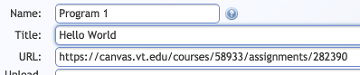

Web-CAT now supports LTI integration with learning management systems (LMS) to allow for single-sign-on support from an LMS, and automatic grade passback to the LMS gradebook.
To use Web-CAT in an LTI-compatible Learning Management System (LMS), you will need to install Web-CAT as an external LTI application. Depending on the LMS, this may be done system-wide, or at the level of individual courses. For system-wide installation, talk to your LMS administrator. For individual courses, follow the steps below.
Before connecting your LMS course to Web-CAT, first create your Web-CAT course offering(s) normally. Set up instructor or grader access for your course staff, and upload your course roster(s).
If Web-CAT is not installed system-wide on an LMS, instructors will typically add it to their individual courses on the LMS instead. To do this, you'll need 4 pieces of information:
Tool Name: Web-CAT
Configuration URL: https://web-cat.cs.vt.edu/Web-CAT/WebObjects/Web-CAT.woa/wa/ltiConfiguration
Consumer Key: (get from your Web-CAT administrator for your school/LMS)
Consumer Secret: (get from your Web-CAT administrator for your school/LMS)
If your school is using its own Web-CAT server, you'll want to customize the Configuration URL shown above so you use your own server's LTI configuration definition--the URL shown above is the one for Virginia Tech's main Web-CAT server.
Follow your LMS instructions for adding Web-CAT as an external LTI tool in your course using the information shown above. For reference, you can read the Canvas instructions for doing this:
Canvas instructions for adding to an LTI tool course
Before Web-CAT can use used in a specific assignment, it must be added as an external LTI tool to the course (or system-wide)--see the instructions above. Next, you must also configure it for each assignment where Web-CAT will be used using the steps below.
To use Web-CAT in an assignment, you will write your assignment instructions as you normally would in your LMS. Perform that step first (you can always edit the assignment later if corrections are needed).
Next, create the assignment on Web-CAT as well. Set up your assignment's reference tests and any grading options that are necessary.
Visit your assignment writeup on your LMS, and copy the URL for the assignment writeup page. For example, on Canvas your assignment URL might look like this example:
https://canvas.vt.edu/courses/58933/assignments/282390
Now, edit your assignment's properties on Web-CAT and paste this value into the URL box:

Note that the example URL shown here includes both the course ID from the LMS, and also the assignment ID. For Canvas URLs, Web-CAT will automatically extract the assignment's ID from the URL. For other LMSes, there is a separate entry for the LTI ID used for the assignment.
To use Web-CAT in an assignment, you will configure the assignment on your LMS to use an external tool for assignment submissions. Follow your LMS instructions for using an external LTI tool to accept assignment submissions. For reference, you can read the Canvas instructions for doing this:
Canvas instructions for using an external LTI tool for assignment submissions